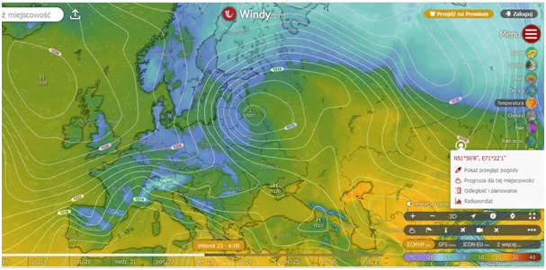
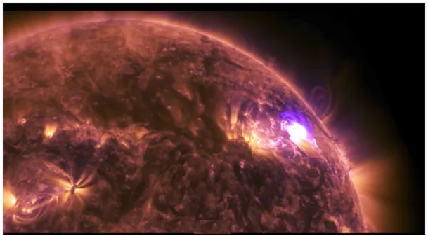
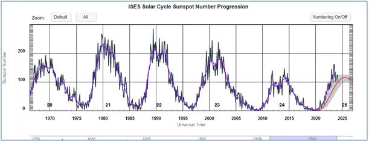
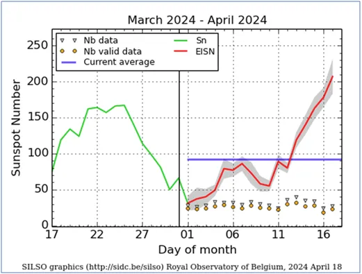
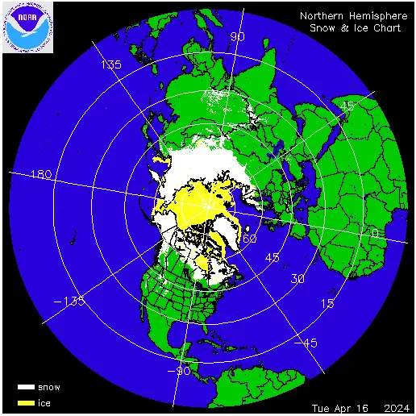

Alergicy odetchną, jonosfera przyrasta.
Jonosfera potrzebuje ok. 5 lat, aby po okresie niskiej aktywności słonecznej się odbudować i skutecznie chronić Ziemię przed promieniowaniem z głębi Kosmosu. Promieniowanie to jest katalizatorem rodzenia się mikroskopijnych cząstek w atmosferze, wokół których budują większe struktury cząstek pary wodnej, czyli chmury. Opisał to zjawisko całkiem niedawno Henrik Svensmark, za co przejdzie do historii, bo wbrew pozorom ogromu wiedzy o świecie na początku XXI wieku ludzie nie wiedzieli jak powstają chmury. Niska aktywność Słońca oznacza więcej chmur i ujemny bilans termiczny planety. Po zaskakująco wczesnej wiośnie musimy wrócić do zimowych ubrań i rano za kierownicą uważać na śliskiej jezdni. Na północy Azji i Ameryki zalęgają rekordowe ilości śniegu, który będzie topniał to końca sierpnia przynosząc nam okresy chłodu oczywiście latem przeplatane upałami. W te cieplejsze dni będziemy słyszeć, że "Ziemia płonie", tu możemy skonsultować się ze specjalistą: https://pawelklimczewski.pl/2024/03/17/jak-mocne-leki-trzeba-brac-by-twierdzic-ze-ziemia-plonie/

Ostatnie miesiące to okres bardzo niskiej aktywności Słońca, opisałem długi cykl 100-letni, który każe nam przygotować się na kilka dekad globalnego ochłodzenia: "Kosmiczna prognoza do 2045. Globalne oziębienie!" https://pawelklimczewski.pl/2024/02/03/kosmiczna-prognoza-do-2045-globalne-oziebienie/


Na szczęście dzisiejszej nocy na Słońcu się coś ruszyło i obserwujemy już ponad 200 plam słonecznych, jednak średnia dla kwietnia to ciągle poniżej 100, czyli poniżej prognozy.

Wiem, że wszyscy chcą wiedzieć jak będzie w majówkę. Mogę śmiało powiedzieć, że przewidywanie, szczególnie gdy dotyczy przyszłości jest trudne. Ponad 10 dni to zbyt długi okres wiosną by obstawiać jakiś wynik, ale podejście statystyczne mówi nam, że "bilans musi wyjść na zero", co po ciepłym marcu, sugeruje niższe temperatury w miesiącach kolejnych.

Oczywiście nie musi to wypaść na naszym terenie, ale póki, co cieplej jest w Azji centralnej, a cyrkulacje w naszym regionie będą północne. Jest to rześkie i zdrowe powietrze, alergicy odetchną.
Paweł Klimczewski